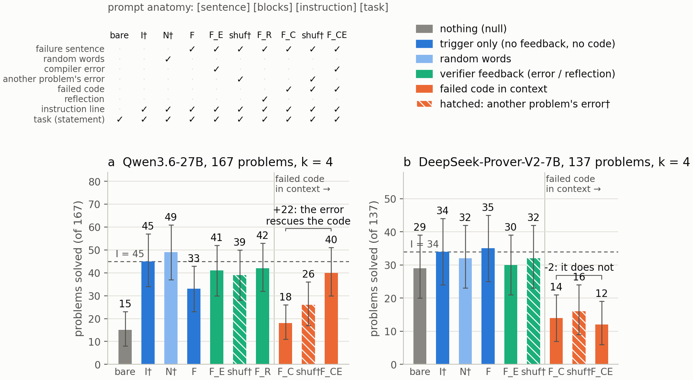
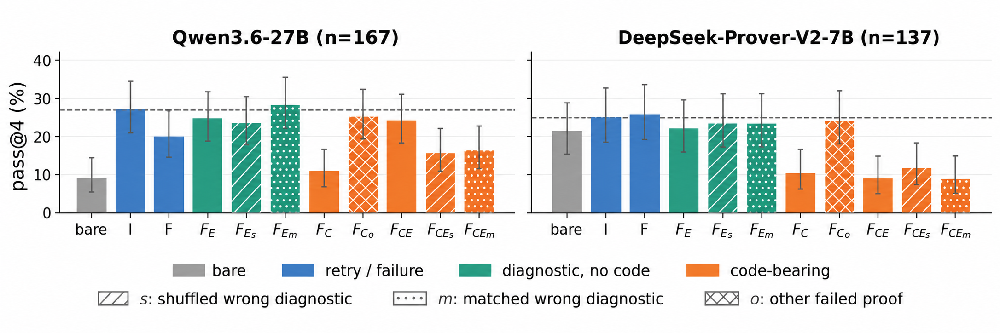
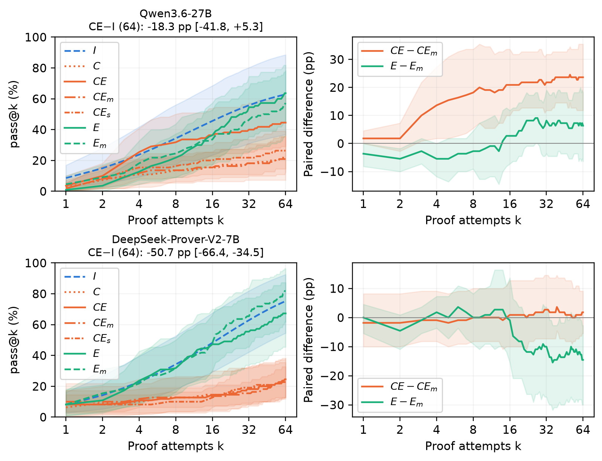

Studies verifier-guided self-repair for Lean 4 proof generation on MiniF2F, using Lean compiler errors as feedback and Lean verification as the success criterion.
Abstract
Verifier-guided self-repair conditions a model on feedback from failed attempts before it tries again, without weight updates. Yet two findings in prior work are in tension: verifier feedback can improve repair of failures, but self-repair itself can provide little-to-no advantage over independent resampling. We reconcile these findings in Lean theorem proving through controlled one-step experiments that hold the preceding failure fixed while varying whether the failed proof is shown, whether the compiler error corresponds to that failure, and the retry instruction. We test frozen Qwen3.6-27B, a general-purpose model, and DeepSeek-Prover-V2-7B, a specialized prover, on difficult MiniF2F problems. We find two opposing effects. Showing the model its failed predecessor reduces success and sharply increases copying of it, while on Qwen adding that attempt's compiler error recovers the loss, to the level of the diagnostic alone. Replacing the predecessor with another theorem's failed proof largely removes the degradation on both models; on Qwen, replacing the diagnostic with another problem's error substantially reduces the recovery. Without the failed proof, correct diagnostics show no resolved advantage over wrong-diagnostic controls on either model. The failed-proof penalty persists with and without the retry instruction, whereas Qwen's diagnostic recovery is weaker without it. In 11-problem sequential experiments through 64 attempts, Qwen retains a correct-diagnostic benefit within failed-proof histories, while DeepSeek-Prover shows no resolved recovery. However, no tested one-step feedback condition establishes an advantage over instruction-only resampling, nor does 64-attempt sequential repair with failed proofs and correct diagnostics at equal token budgets. Verifier feedback can thus improve repair without overcoming the performance loss from conditioning on a failed attempt.
Problem
Prior work disagrees on whether verifier feedback helps LLM self-repair. Some studies find diagnostics crucial, while others find self-repair barely beats independent resampling. The aim is to reconcile these findings for Lean theorem proving.
Approach
Controlled one-step experiments hold a failed predecessor proof fixed. They vary the retry instruction, the failure notice, exposure of the failed proof, and whether the Lean compiler error corresponds to that failure. Controls swap in shuffled or class/length-matched wrong diagnostics and replace the proof with another theorem's failed proof. Frozen Qwen3.6-27B and DeepSeek-Prover-V2-7B are tested on difficult MiniF2F problems, plus 11-problem sequential experiments through 64 attempts.

Figure 3: One-step pass@4 for the central arms, and prompt anatomy. Dashed lines mark instruction-only performance; hatching denotes shuffled wrong diagnostics, and the bracket gives the F_{CE}-F_{C} difference in problems solved. Whiskers are marginal 95% problem-bootstrap intervals, not paired contrasts. The predecessor-replacement and matched-diagnostic controls are summarized in Fig. 1 and Tab
Results
Showing the model its own failed proof lowers success and increases copying. On Qwen, correct diagnostics recover this loss, mostly on Lean 3-syntax predecessors; DeepSeek-Prover shows no resolved diagnostic benefit. No feedback condition beats instruction-only resampling, either in one step or over 64 sequential attempts.

Figure 1: Controlled one-step pass@4. Dashed lines mark instruction-only performance. s : shuffled wrong diagnostic; m : class/length-matched wrong diagnostic; o : another theorem’s failed proof. Whiskers are marginal 95% problem-bootstrap intervals; paired contrast intervals are reported in text.

Figure 2: Sequential repair and diagnostic-content effects on both models. Qwen (top) and DeepSeek-Prover (bottom) each use their own 11-problem bank. Left: success by attempt k for memoryless instruction-only resampling ( I ), failed-proof history alone ( C ), failed-proof histories with correct ( CE ), ordinary-shuffled ( CE_{s} ), or matched-wrong ( CE_{m} ) diagnostics, and code-free diagnosti